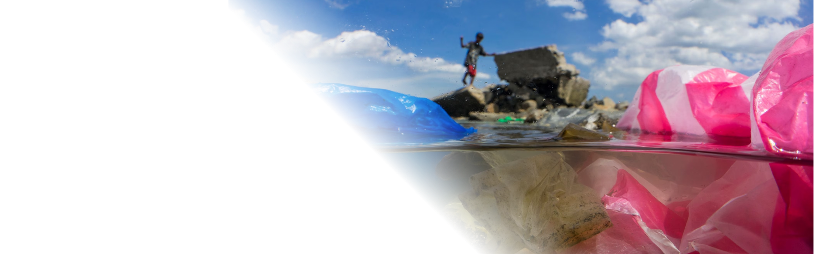
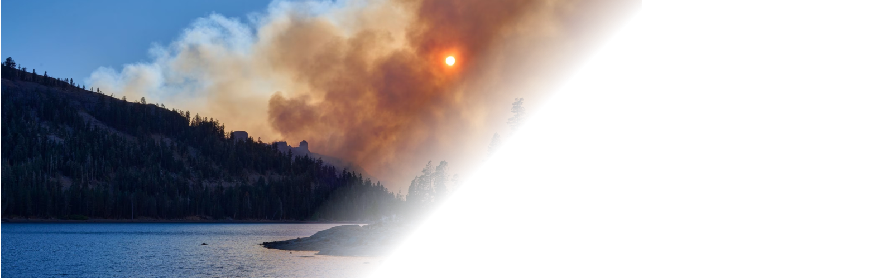
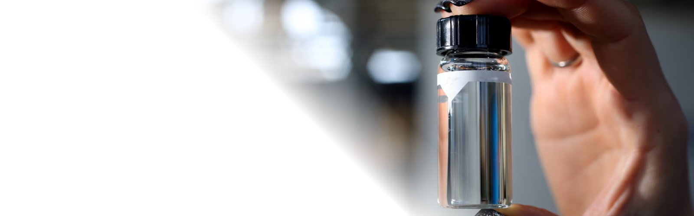

ENVIRONMENT
National Geographic's environmental efforts encompass a broad range of activities that aim to protect and understand the natural world, from ground-breaking journalism and media productions to hands-on conservation work and scientific research.
Through education, advocacy, and action, National Geographic continues to inspire millions to recognize the urgent need for environmental stewardship and a sustainable future.
Environment
-
- The world's glaciers are melting faster than we thought, new research shows
- Glaciers have survived through a delicate balance of gain and loss. A new study shows just how much the scale has tipped.
- Today, the world is the in the grips of another major shift, this time due to anthropogenic activities. And scientists are making predictions about how ice will soon evolve as temperatures warm.
- The losses could also have profound impacts on people who depend on glaciers for water.
- Aguayo notes that the percentages of ice volume lost don't necessarily translate into how much water supply could be reduced by.
-

- The world's plastic pollution crisis, explained
- Much of the planet is swimming in discarded plastic, which is harming animal and possibly human health. Can it be cleaned up?
- Plastic pollution has become one of the most pressing environmental issues, as rapidly increasing production of disposable plastic products overwhelms the world's ability to deal with them.
- Plastic pollution is most visible in developing Asian and African nations, where garbage collection systems are often inefficient or nonexistent. But the developed world, especially in countries with low recycling rates, also has trouble properly collecting discarded plastics.
- Plastic trash has become so ubiquitous it has prompted efforts to write a global treaty negotiated by the United Nations.
-

- Wildfire season is getting longer—and more intense. Here's how to prepare.
- The impacts of these blazes can increasingly be felt hundreds of miles away. Here are some ways to protect yourself from dangerous smoke.
- People living in the U.S. Northeast recently faced the worst air in more than two decades when smoke from Canadian wildfires drifted southward, breaking pollution records and turning skies a deep orange.
- Though wildfires and smoke events occur every year across the nation, we are accustomed to hearing most about those in the U.S. West, where blazes tend to be larger and burn more acreage.
- The northern blanket of haze in June is a reminder that few places are immune to the effects of wildfire smoke. This is especially true as climate change drives conditions like extreme heat and drought, which can make wildfires worse and lead to longer fire seasons.
-

- Is tap water safe to drink? Here's what you really need to know.
- Experts weigh in on the chemicals that can be found in drinking water, how it's regulated, and what you can do if you're worried about your water.
- Most U.S. residents don't need to worry about the safety of their tap water, but millions of Americans are still exposed to contaminants every year.
- It can take a water crisis to highlight where drinking water infrastructure is failing.
- One of the most devastating water crises in recent memory was the lead contamination in Flint, Michigan's drinking water in 2014. As of January 2023, nine years after the initial contamination, residents are still dealing with the effects. And in 2022 year, a water crisis in Jackson, Mississippi left many of the city's 150,000 residents without potable water.
We support a diverse, international community of changemakers — National Geographic Explorers — who use the power of science, exploration, education, and storytelling to illuminate and protect the wonder of our world.
-
- Are we approaching the scientific limit to a hurricane's power?
- However, “as you raise the greenhouse gas content of the atmosphere, causing warming to increase, that limit does go up. So it may be that at the end of the century, if we are not successful at curbing greenhouse gases, the maximum value might be closer to 220 miles per hour.”
- The biggest problem with more dangerous hurricanes isn't necessarily wind, Emmanuel says. It's water.
- “There's 100 percent consensus among climate scientists that raising the temperature will increase the rainfall in hurricanes,” he says. “It's just very straightforward physics. So, the real increase in hazard from climate change isn't so much about the intensity increasing, although that's important. It's about the rain increasing.”
- cancel
-
- Millions depend on the Mississippi—but the mighty river is running dry
- The Mississippi is an environmental keystone: 40 percent of the continental United States drains into the river.
- Ragsdale and his on-board crew of 17 are here because the once-mighty Mississippi River is in crisis: Recent years have seen severe, months-long droughts take hold across a vast swathe of America's Midwest and South, regularly leaving the river at an historic low.
- today, the growing frequency of droughts is forcing barges to carry fewer goods. And climate change is playing a role: The Fifth National Climate Assessment, released last November, highlighted that drought could adversely affect the Mississippi with “regional and national implications.”
- cancel
-
- The world's historic sites face climate change. Can Petra lead the way?
- As drought has made local agriculture precarious, climate change has also made flash flooding more frequent, threatening both the area's ancient ruins and local communities. And more intense temperature swings have accelerated the weathering of historic sandstone facades that were carved at the height of the Roman Empire.
- Since the 1980s, the nearby archaeological site of Petra has turned into a global tourism hotspot. Nearly a million visitors visit Petra each year to marvel at the tombs and temples cut into sandstone by the Nabatean civilization almost 2,000 years ago. They, too, are threatened by flash floods, and damage to the archaeological site would endanger the tourism business locals have come to rely on.
- Lessons from the past are also being used to help adapt to extreme conditions in the future. “There is ancient wisdom physically built into the site,” Herrmann says. “Combined with modern solutions, that Nabatean water management system has the greatest potential for adapting Petra to flash floods.”
- cancel
-
- How a wild river became a national park—and sparked a movement
- The campaign to protect the Vjosa, which enjoyed overwhelming public support, involved years of protests, lawsuits, and international pressure on Albania to scrap the dam plans. The government, which has struggled to improve economic conditions in one of Europe's poorest countries, long resisted, especially since Albania relies almost exclusively on hydropower for electricity.
- The problem of how to best protect rivers has long vexed conservationists. Historically, rivers have been treated as part of land protections. But studies show that rivers do not benefit from this approach, in part because they may flow in and out of protected areas and sometimes cross borders. What happens at the unprotected end of a river can have a profound impact on the same body hundreds of miles away.
- cancel